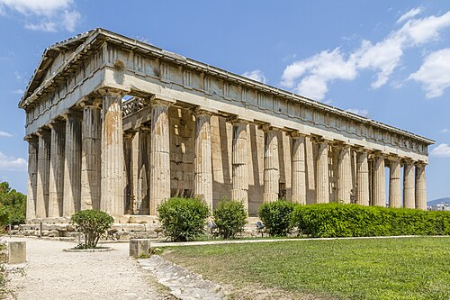

Гефе́ст (др.-греч. Ἥφαιστος) — в греческой мифологии бог огня, самый искусный кузнец, покровитель кузнечного ремесла, изобретений, строитель всех зданий на Олимпе, изготовитель молний Зевса. Его атрибуты - это кузнечный прибор (клещи и молот), рабочая шапка и короткое верхнее платье ремесленников (эксомида).
Гефест и два помощника работают над вооружением для Ахилла. В щите, поднятом Гефестом и одним из помощников, отражение Фетиды, сидящей и наблюдающей за сценой. Фреска из Помпеи.
Согласно Гомеру, сын Зевса и Геры. Брат Аполлона, Артемиды, Ареса, Афины, Гебы и Илифии. По другим мифам, Гера зачала и родила Гефеста сама, без мужского участия, из своего бедра, в отместку Зевсу за рождение Афины. Также отцом Гефеста иногда считали Гелиоса или, по критскому мифу, Талоса. Когда Гефест появился на свет, он оказался больным и хилым ребёнком, к тому же хромым на обе ноги. Гера, увидев своего сына, отказалась от него и скинула с высокого Олимпа. Но море не поглотило юного бога, а приняло его в своё лоно. Приёмной матерью Гефеста стала морская богиня Фетида. До своего совершеннолетия Гефест жил на дне моря и занимался своим любимым делом: ковал. Прекрасные изделия выходили из кузни Гефеста, не было им равных ни по красоте, ни по прочности. Словно живые летали изображённые птицы, реально жили люди, и даже ветер обретал жизнь в прекрасных творениях Гефеста. Узнав о том, что он сын Зевса и Геры, и о преступлении матери, Гефест решил отомстить. Он создал кресло (золотой трон), равного которому не было в мире, и послал на Олимп в качестве подарка для Геры. Гера пришла в восторг, никогда она не видела такой великолепной работы, но стоило ей сесть в кресло, её обвили невидимые ранее оковы, и она оказалась прикована к креслу[8]. Никто из пантеона богов не смог разомкнуть путы кресла, поэтому Зевс был вынужден отправить Гермеса, посланца богов, чтобы приказать Гефесту освободить Геру. Но Гефест отказал. Тогда боги послали Диониса, бога виноделия, к Гефесту. Дионису удалось напоить Гефеста и доставить его на Олимп. Будучи в опьянённом состоянии, Гефест освободил свою мать. Другая комбинация мотивов присутствует в I песне «Илиады»: Гефест помог связанной Гере, за это сброшен Зевсом с неба и упал на Лемнос, покалечив ноги, отчего стал хромым. Гера признала своего сына и отдала ему в жёны прекрасную Афродиту. Гефест же был принят в сонм богов и продолжал работать в качестве кузнеца. Все здания на Олимпе были построены Гефестом, а также отец Гефеста, Зевс поручал изготавливать свои, не знающие промаха, молнии своему сыну.

Храм Гефеста в Афинах.